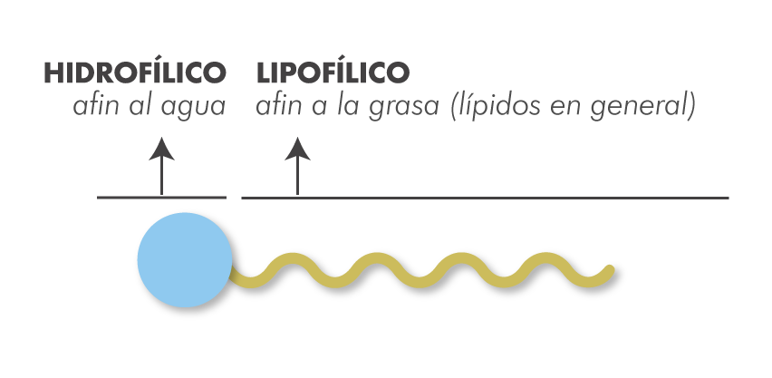
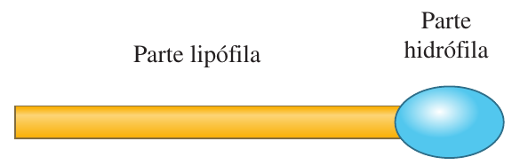
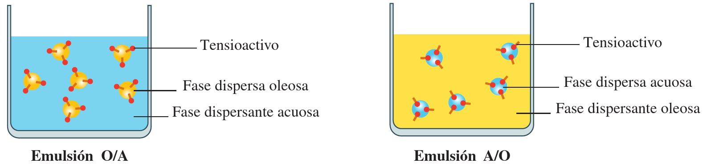

Todas estas palabras designan lo mismo, una sustancia que tiene dos partes:
- una hidrófila o hidrofílica (que se puede unir a la parte de una mezcla constituida por sustancias acuosas) y la
- otra lipófila o lipofílica (que se puede unir a la parte de una mezcla constituida por sustancias oleosas).


Su forma de actuar es la siguiente: la parte lipófila o lipofílica de la molécula se une a la fase oleosa de mezcla y la parte hidrófila o hidrofílica se une a la fase acuosa de la mezcla, manteniendo así ligadas las dos fases y dificultando su separación.

Cabe hacer una observación. Y es que todos los emulsionantes, emulgentes o emulsificantes son tensioactivos, pero no todos los tensioactivos son emulgentes. Es decir, no todos los tensioactivos se usan o son útiles para estabilizar una emulsión (facilitando la unión de dos líquidos inmiscibles).